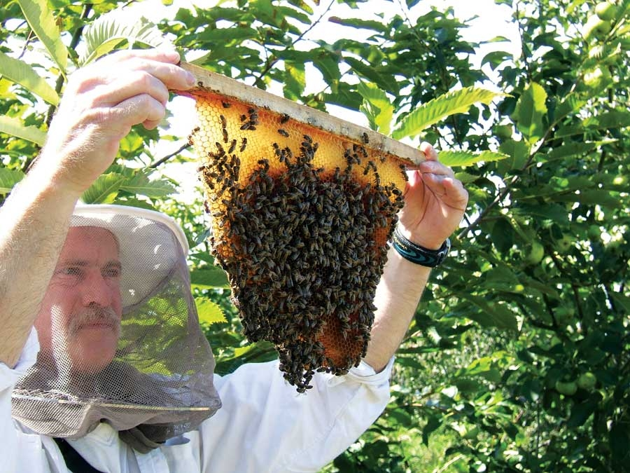
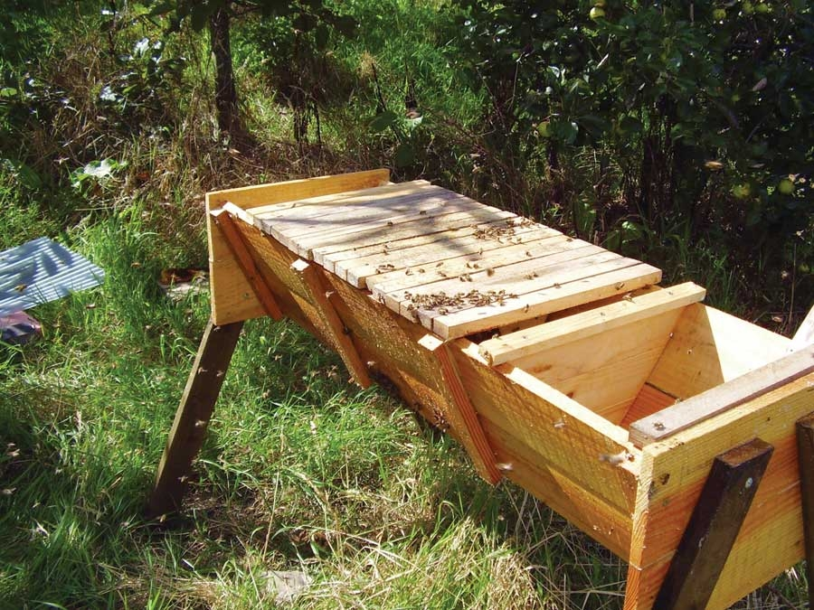
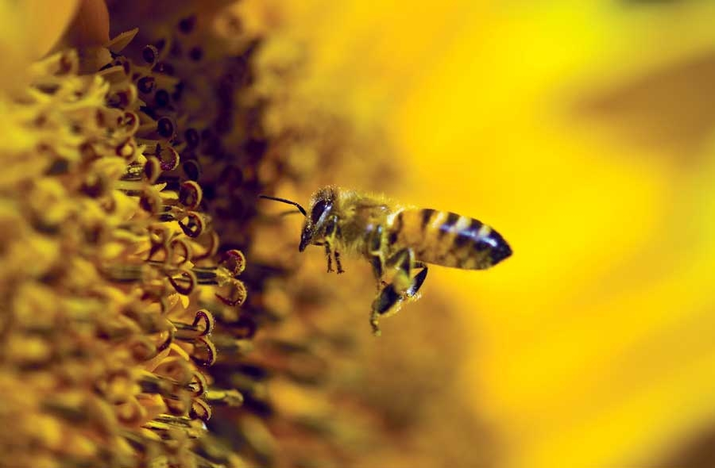
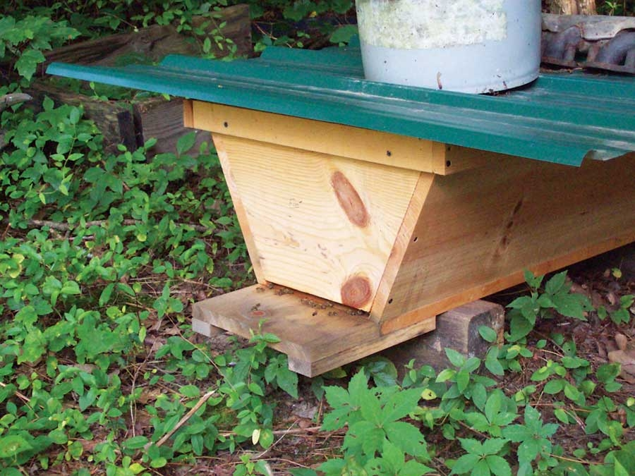
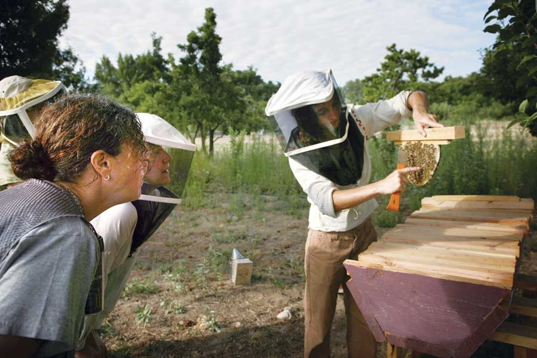
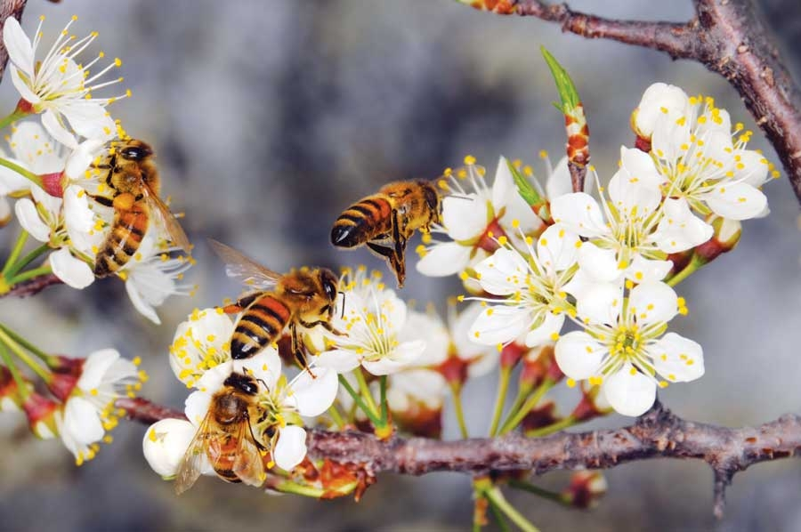

Beekeeping is a great hobby, whether you keep bees for pollination, honey, profit, medicinal uses or all of the above. But getting started with bees can be expensive if you use conventional hives. A basic setup with bees can cost more than $200, and building conventional hives and frames is time-consuming. But there’s a simpler, less-expensive and more natural option: top-bar hives. The top-bar method of beekeeping allows you to make simpler, inexpensive hives. Build them now and you can start keeping bees next spring.
In the top-bar system, you build simple box hives with slats (bars) of wood laid across the top, to which the bees attach their wax comb.
With growing concerns about colony collapse disorder and the resulting decline in the number of pollinators, gardeners might consider maintaining a top-bar hive of honeybees simply to increase vegetable and fruit yields through better pollination.
Top-bar beekeeping is for both urban and rural dwellers who want to keep bees on a modest scale, producing honey and beeswax. Above all, top-bar beekeeping is for people who love bees and understand and appreciate their role in the pollination of many wild and cultivated plants.
If your goal is to obtain the absolute maximum amount of honey regardless of all other considerations, top-bar beekeeping is not for you. This style of beekeeping can produce adequate amounts of honey, but the emphasis is on sustainability and keeping healthy bees rather than maximizing honey crops.
Beekeeping does not have to be complicated. And you need none of the stuff in those glossy supply catalogs to keep healthy, happy and productive bees.
Nearly all conventional beehives in use in the United States and Europe are similar. They consist of rectangular wooden boxes containing removable wooden frames holding preformed “foundation” for the bees to build wax comb on, plus a floor and a roof. The queen bee lays eggs in this comb, and the bees store some pollen (their protein source) and honey in the comb. Other wooden boxes, called “supers,” with (usually) smaller frames, are stacked on top to store most of the honey crop.
In some ways, this box-and-frame hive is right for the job - at least from the beekeeper’s point of view. It’s a simple matter to lift individual frames out of the hive to see what the bees are doing and, if you have a strong back, it’s relatively easy to remove the honey crop. The uniform shape of the honeycomb in the frames makes it easier to extract the honey with a centrifuge.
For the bees, however, this conventional system has several disadvantages. Bees naturally build comb in deep, catenary curves (the shape made by a chain or rope suspended by its ends). But the use of preformed foundation inside rectangular frames forces bees to build comb according to our requirements, not theirs. Bees prefer to adjust the size of cells according to their needs.
In a top-bar hive, the bees are encouraged to build their wax comb (which holds the cells they fill with honey or developing bees) from a thin strip of “starter wax” applied to the wooden bars, which simply rest across the top of the box that forms the hive. (See photos in the Image Gallery.) To extract honey from this wax comb, you crush it in a strainer and allow the honey to drain into a jar.
Top-bar beekeeping requires only one of the simple, versatile hives described below and a sharp knife. Instead of using a smoker to calm the bees when you open the hive to inspect bees or harvest honey, you can use a hand-held spray bottle containing water and, perhaps, a few drops of a mixture of essential oils or cider vinegar.
Top-bar hives have been used for thousands of years and are still popular in developing countries. I created a top-bar hive design with sloping sides and side entrances. The hive boxes are 36 to 48 inches long. The hives are 18 inches wide (outside measurement at the top) by 12 inches deep, measured at the ends. The trapezoidal shape is close to the natural shape of the comb. It’s strong and virtually eliminates attachment of comb to the sides of the hive - a useful feature for the beekeeper. This top-bar hive is simple to construct using inexpensive or recycled materials - just be certain the wood hasn’t been treated with chemicals that would harm the bees or you. For example, do not use green, pressure-treated lumber or lumber that may have been sprayed with a pesticide.
Bees build their wax combs from the bottoms of wooden bars that are 17 inches long, 1 3/8 inches wide and about three-quarter-inch thick. The bars rest on the upper edges of the sides of the hives, giving an internal width of 15 inches. A central groove, about one-eighth-inch deep, is cut along the length of each bar using a circular saw and is filled with molten wax to provide a guide and anchor point for the bees to build their comb. Alternatively, a strip of thin wood can be fixed along the center of the bar and rubbed with wax. Two inches on each end is left free of wax to discourage the bees from building comb attached to the sides of the hive.
The floor can be either solid or mesh, the latter being preferable in summer and hotter climates in general. The mesh allows ventilation and prevents the buildup of debris inside the hive. But it’s a good idea to have some method of closing the bottom of the hive during winter if your bees will be exposed to strong winds.
This long top-bar hive is strong, versatile and easy to build, even for someone with only basic woodworking skills. It’s also easy to manage. After the hive is in place, the heaviest lifting you will need to do is to remove the roof.
For free, detailed plans, see How to Build a Top-bar Hive.
In many ways, managing a top-bar hive is easier than managing a framed hive - but you can’t ignore the bees completely.
To get started, you can capture a swarm and put it in the hive or buy a package of bees (about $80) from a beekeeping supply company.
Sometimes, bees will naturally swarm to an empty top-bar hive and populate it. To attract a swarm to the hive, put it out during the swarming season, which is late spring through midsummer. Baiting the hive with a few drops of lemongrass oil will improve your chances of attracting a swarm.
The actual process of harvesting honey is simple: Take one comb at a time, cut it from the bar and replace the bar for the bees to build more comb. Take only a few bars of honey in summer, leaving a surplus for winter. Then harvest more the following spring after winter is over.
If you want at least some honey in liquid form, toss the comb into a stainless steel bucket, thoroughly mash it with a paddle, and strain it through muslin. But you probably won’t get all the honey out of the wax. To clean the wax, put it near a hive for the bees to reclaim any remaining honey. After they’ve cleaned it up, you can use the wax for candles or other projects.
- This article is an excerpt from The Barefoot Beekeeper by Phil Chandler
If you keep bees, you can use some of the honey from your hives to make mead. Not many drinks can boast the long and illustrious history of mead - most likely the first fermented beverage known. When honey combines with water and yeast, a delightful reaction occurs. For the home-brewer, mead is one of the easiest wines to make. Traditional mead is a little on the sweet side, although it mellows with age. Learn more by reading the article How to Make Mead.
|
 PHIL CHANDLER The comb attached to a top bar must be handled carefully so it doesn’t break away from the bar. |
 PHIL CHANDLER You can build this hive from recycled lumber. |
 ISTOCKPHOTO/AMIT EREZ Honeybees are important pollinators. Without them, many fruits and vegetables are less productive (or will not produce a crop at all). |
|
 JOEY TEEM/CUSTOMWOODKITS.COM There are many designs for top-bar hives. The one above has an entrance for bees at the end of the hive instead of on the sides. |
 SCOTT VLAUN New comb on a top bar. |
 ISTOCKPHOTO/JAMES BREY We need bees for more than honey and tree fruit crops. Bees also pollinate squash, cucumbers, tomatoes, strawberries, raspberries and other crops in our gardens. |